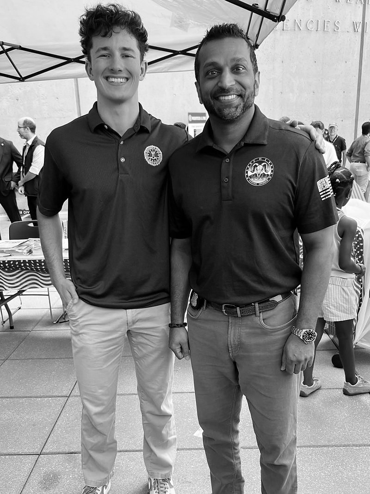
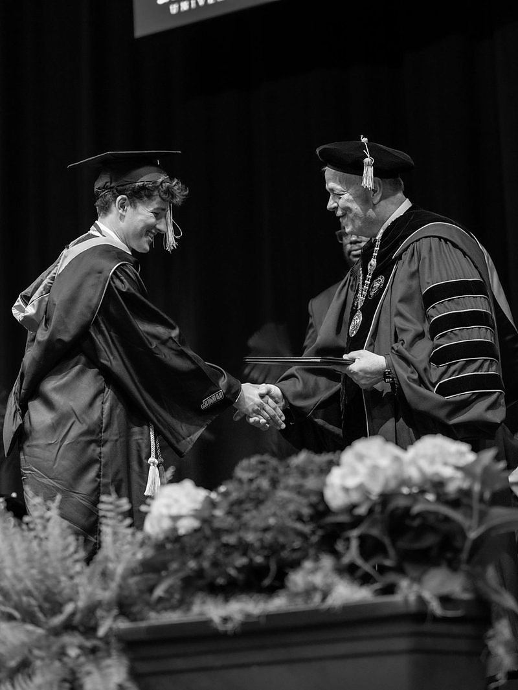
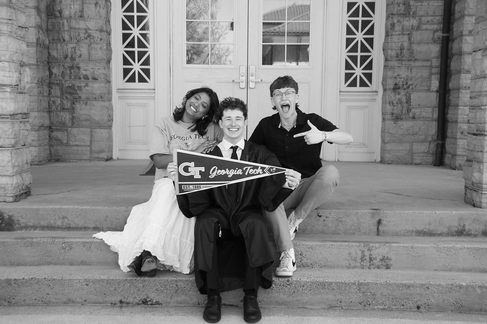
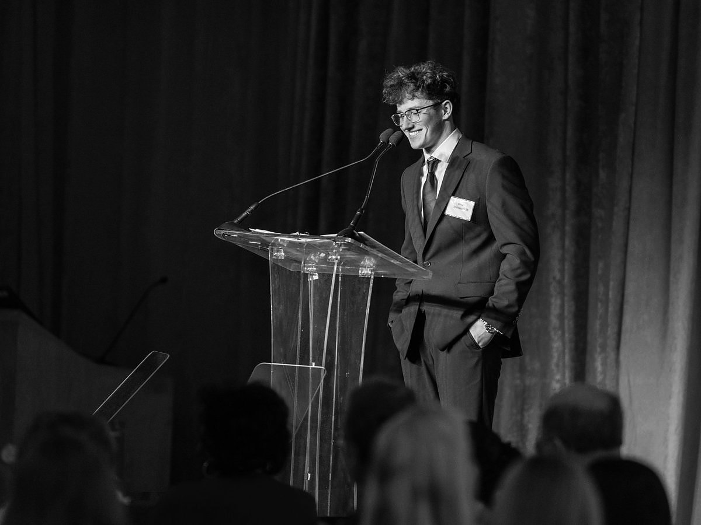
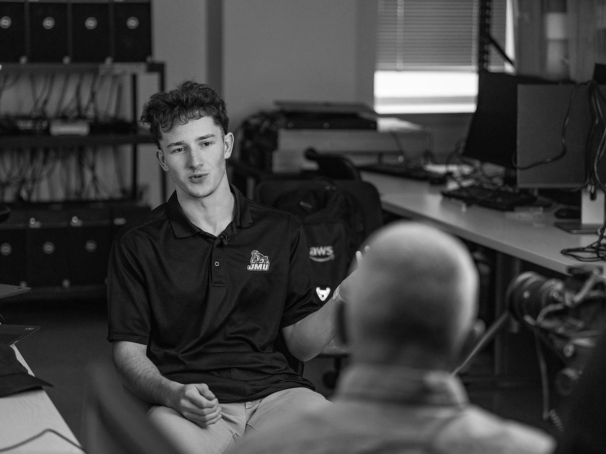
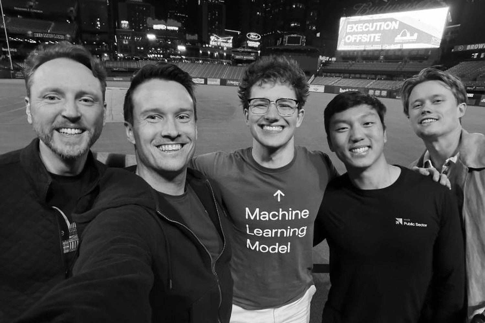

GTG-1002 and APT1 / PLA Unit 61398
How state-aligned intrusion tradecraft changed across two decades. Georgia Tech.
2026National Security Technical Program Manager at Scale AI, in Washington, DC.
Across defense, intelligence and cloud. I started at 18. Everything before Scale was an internship or a contract I took while I was still in school.
Washington, DC. I direct a core mission area of Scale’s largest contract, the $151B Golden Dome initiative, developing and deploying cyber effects with a cross-functional team of 50+ engineers.
I also lead a multi-million-dollar AI security program for an Intelligence Community customer, driving customer syncs, roadmap planning and team coordination, and have authored 10+ strategic reports for IC leadership.
Quantico, Virginia, in the Cyber Division. I built 153 Splunk panels ingesting over a million network packets, architected AWS VPC Flow Log logging, and presented my findings directly to the Chief AI Officer.
I also wrote 10+ Python and Scapy traffic generators to automate operations and run hands-on technical training for FBI personnel.
Washington, DC. I deployed five air-gapped AI security environments for defense and Intelligence Community customers on AWS CloudFormation for model scanning, vulnerability detection and runtime threat protection.
I drove federal sales and capture through demos, RFIs and solution architecture. HiddenLayer was selected for the MDA’s $151B SHIELD IDIQ that year and grew ARR 10x. I left with an L6 return offer.
Reston, Virginia, on a DoW-funded R&D team. I led a Python agentic pipeline with GitHub and GitLab integrations and air-gapped LLMs for automated code flaw detection, and presented the architecture to GitHub’s CISO and 200+ defense stakeholders.
Arlington, Virginia, in Professional Services. I engineered a full-stack RAG-based AI tool in Python and AWS CDK across 40+ cloud services including Bedrock, S3 and OpenSearch. It shipped in half the projected timeline at under 30ms latency for 100+ concurrent users, tripled the project’s KPIs and expanded its scope by more than 200%.
I also hosted a company-wide generative AI workshop for 50+ attendees on language models, NLP, vector embeddings and prompt engineering.
Herndon, Virginia. My first job, and I was the only freshman on the team. I built a Python and Google Cloud inventory tracking application for the Army under the $850M ALECS program, cutting latency by 45% and improving performance by 25%, and presented the final build to the CEO.
I ran identity and access management and Active Directory for 10,000+ users alongside the CIO, started the company’s first campus outreach program, ranked top performer for ticket closures in Q1 2025, and was promoted twice in under a year.
Along the way: network and data engineering for Rockingham County Public Schools, threat intelligence for the Cyber Security Forum Initiative, engineering at Solvitur Systems, and Deloitte’s DLAMP program.
A summer in the Cyber Division at Quantico. The work was detection engineering at volume: 153 Splunk panels over more than a million network packets, and AWS VPC Flow Log architecture underneath them.
I wrote 10+ Python and Scapy traffic generators so the operations ran themselves, ran hands-on technical training for Bureau personnel, and presented the findings to the Chief AI Officer. In August 2026 the FBI gave me a Certificate of Appreciation for contributions making a significant impact on its Cyber Division.

How state-aligned intrusion tradecraft changed across two decades. Georgia Tech.
2026A machine learning security framework that detects and classifies wireless attacks across drone networks. JMU.
2026Principal software engineer on a consumer application across EC2, Cognito, S3 and API Gateway. Helped secure more than $50,000 in funding.
$50,000+A division-wide allocation system, with analysis that reached the Governor of Virginia.
23 schoolsA music education platform for underrepresented communities. I was the only freshman selected for the team.
2024Before Scale I worked at the FBI, AWS, HiddenLayer, Blue Sky Innovators and ManTech, building cloud and AI systems for defense and intelligence customers. The programs ran from an $850M Army contract to a $151B IDIQ.


Degrees and credentials
In progress, specializing in artificial intelligence.
4.00Honors College, 2023 to 2026. Summa cum laude, valedictorian of my major, President’s List every semester, graduated a year early. I founded TechLink, the first IT club at JMU, was president of Madison Tech Society, internal vice president of the Madison Consulting Club and an executive officer of the Cyber Defense Club. I taught Honors 100, a seat usually held by senior faculty.
3.97Across AWS, CompTIA, Google, Microsoft, Anthropic and Cisco, including the AWS Solutions Architect and Generative AI Developer professional certifications.
46Active TS/SCI with Full Scope Polygraph.
TS/SCIRecognition
From the FBI, for contributions making a significant impact on its Cyber Division.
2026James Madison University.
2026First in GPA within my major, graduating a year early.
1stPresented to the university president, and taught Honors coursework.
$5,000For founding the IT Ambassador program as a freshman and serving through graduation.
2026James Madison University.
2026William’s trajectory is going to the moon. He never asks for shortcuts, only for context that accelerates his own learning. That combination of initiative and humility is rare even among seasoned consultants.
Adam Bluhm, Principal AI Security Architect at HiddenLayer
Without question, one of the most promising young professionals I’ve come across. He doesn’t just execute. He engages. He’s not chasing titles. He’s doing the work.
Troy L. Edwards Jr., Engagement Manager at AWS
Will is a rare breed. The first one in and the last to leave, not to clock hours, but because he’s genuinely obsessed with the pursuit of excellence.
Cole W., Business Owner and Cybersecurity Researcher


Cloud with Raj.
2026RockTown Now.
2026The only solo student speaker.
2026JMU Admissions.
2026
Working on agents and evals, getting AI deployed and tested for the people who protect this country. If that is your problem too, write to me.